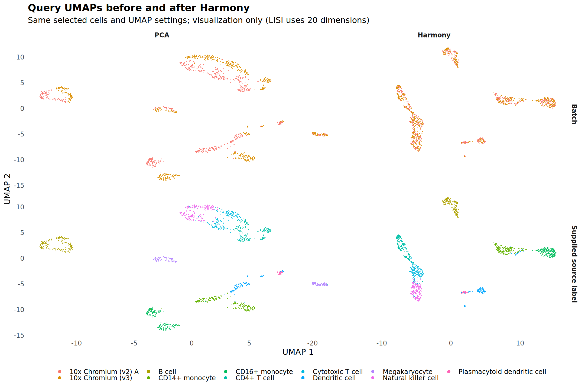
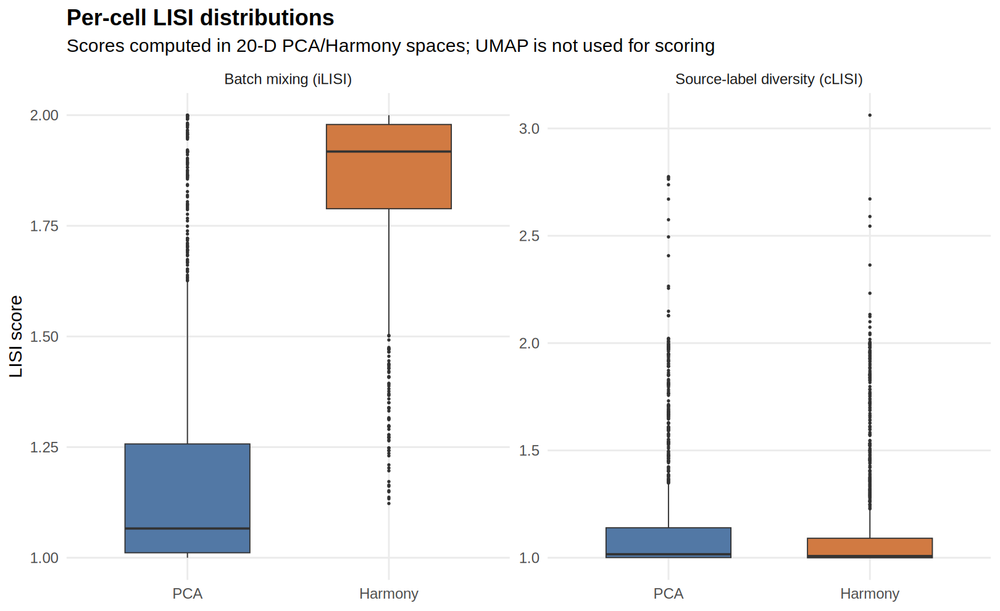

Choosing and evaluating scRNA-seq integration: Harmony, RPCA, and CCA
Nasir Mahmood Abbasi, PhD
Bioinformatics Educator
Worked example updated .

A better-mixed UMAP is not enough to justify integration. This worked example compares an unintegrated PCA representation with Harmony on exactly the same public PBMC cells, then asks two separate questions: did batch diversity change, and what happened to the purity of the supplied cell-type labels?
Format: Hands-on lab. The public-data PCA → Harmony workflow and LISI calculations were executed for this lesson. Scripts, selected cell IDs, settings, environment records and observed results are downloadable. RPCA and CCA are discussed as unexecuted extensions; this page does not report their performance.
1. Start with a comparison the data can support
We use the public pbmcsca.SeuratData 3.0.0 dataset from SeuratData, based on Ding et al.'s systematic comparison of sequencing methods. The two query groups are 10x Chromium (v2) A and 10x Chromium (v3): genuine assay groups, not an artificial split of one count matrix. A third group is reserved for the separate annotation lesson and does not enter this integration comparison.
| Source Method | Role | Source cells | Eligible cells | Selected |
|---|---|---|---|---|
| 10x Chromium (v2) A | Query | 3222 | 2992 | 590 |
| 10x Chromium (v2) B | Reference | 3222 | 3011 | 537 |
| 10x Chromium (v3) | Query | 3222 | 2993 | 559 |
The workflow retains cells with more than 200 detected genes and usable supplied CellType annotations, then takes at most 80 cells per assay-group × source-label stratum with a fixed seed and stable ordering. Smaller strata are retained. The query has 1,149 cells across 9 supplied source-label categories; exact selections and exclusions are recorded. This capped sample is deliberately compact and label-stratified, so neither cell-type frequencies nor score distributions represent the full study or natural blood composition.
Why integration is a question, not an obligation. Shared populations make a comparison possible, but an assay label can still be confounded with donor, processing, depth or genuine state. If comparable populations already mix, correction may add little. A type seen in only one batch has no demonstrated counterpart to align. Keep the baseline and check the batch-by-label composition before interpreting any score.
2. Run one recorded preprocessing path
Download the worked-example bundle, follow its setup and reproduction notes, and inspect the full executable script. The input is fetched from its public provider and checked against a recorded SHA-256; no private data or pre-existing local RDS object is required.
cd pbmc-methods-worked-example
# On Ubuntu 24.04, follow the setup instructions in README.md first.
python3 prepare_inputs.py --data-dir data
Rscript run_example.R \
--data-package data/pbmcsca.SeuratData_3.0.0.tar.gz \
--output reproduced-resultsTested environment: R 4.3.3; Seurat / SeuratObject 5.0.1; SingleR 2.4.1; scuttle 1.12.0; scran 1.30.2; Harmony 1.2.3; LISI 1.0; ggplot2 3.4.4. The run uses 2000 variable genes, 20 PCs, seed 20261023 and one-thread settings. It rebuilds a classic RNA assay from public counts, applies log normalization and variable-feature scaling, and preserves the unintegrated PCA. This uses Seurat 5 with a classic assay workflow; it is not an interchangeable recipe for every layered object.
Correct coordinates, not the RNA count matrix
Harmony receives the existing PCA representation and the recorded batch field. The tested run uses theta = 2, lambda = 1 and at most 10 Harmony iterations. Harmony 1.2.3 is deliberately pinned; the newer Harmony2 release is not silently substituted. The script creates separate UMAPs from PCA and Harmony with the same visualization settings and checks that the original RNA counts remain unchanged.
# Excerpt: the downloadable script supplies the complete input checks.
query_harmony <- harmony::RunHarmony(
object = query,
group.by.vars = "batch",
reduction.use = "pca",
dims.use = 1:20,
theta = 2, lambda = 1,
max_iter = 10, ncores = 1
)Integration does not manufacture biological replicates. Cells are not independent donor replicates, and corrected coordinates are not corrected gene counts for differential expression. Keep the original RNA assay and use a suitable sample-aware inferential design for downstream expression comparisons.
3. Score the same cells in the same order
The calculation uses lisi::compute_lisi() on the 20-dimensional coordinates, not UMAP, with perplexity 30 for both branches. Coordinate rows, metadata rows and cell IDs must match exactly. Missing labels, duplicate IDs, too few cells or a different cell set cause the workflow to stop.
# These invariants are checked before each paired score calculation.
stopifnot(identical(rownames(pca_coordinates), rownames(harmony_coordinates)))
stopifnot(identical(rownames(pca_coordinates), rownames(evaluation_metadata)))
stopifnot(!anyNA(evaluation_metadata[, c("batch", "source_label")]))
pca_lisi <- lisi::compute_lisi(
pca_coordinates, evaluation_metadata,
label_colnames = c("batch", "source_label"), perplexity = 30
)
harmony_lisi <- lisi::compute_lisi(
harmony_coordinates, evaluation_metadata,
label_colnames = c("batch", "source_label"), perplexity = 30
)| Diagnostic | What it measures here | What it does not establish |
|---|---|---|
| Batch iLISI | Effective local number of assay-group labels. With two groups, 1 indicates local dominance by one group; values approaching 2 indicate greater diversity. | A universal target of 2, removal of a causal technical effect, or permission to mix distinct states. |
| Source-label cLISI | Effective local number of supplied cell-type labels. Values near 1 mean greater source-label purity. | Independent biological validation, correct labels, or preservation of every rare state and continuous trajectory. |
These are raw local-diversity diagnostics, not normalized benchmark scores. Neighborhood scale, category proportions, embedding geometry and label quality affect their values. The source labels are pre-existing expression-derived annotations (not clusters newly defined from Harmony), but they still are not independent ground truth. No silhouette or held-out biological validation is reported.
4. Inspect the observed comparison
Saved run: The same 1,149 query cells were scored in 20-dimensional PCA and Harmony representations; the reference cells were not included in integration.
| Representation | Cells | Batch iLISI | Source-label cLISI |
|---|---|---|---|
| PCA | 1,149 | 1.066 [1.011–1.257] | 1.016 [1.001–1.140] |
| Harmony | 1,149 | 1.918 [1.789–1.979] | 1.008 [1.000–1.091] |
Median batch diversity increases from 1.066 to 1.918, while the pooled source-label purity diagnostic remains close to 1. This supports a limited mixing interpretation for the annotated sample, not a claim that all biological structure was preserved. The median paired iLISI change is 0.766; that is not the same quantity as subtracting the two pooled medians.




Do not let a pooled median hide a population
The bundle includes paired per-cell scores and summaries by source label. Compare each category with its own baseline, and consult the actual batch counts: a rare group or a label missing from one batch cannot be interpreted like a balanced shared population.
| Source label | v2 A cells | v3 cells | Batch iLISI | Source-label cLISI |
|---|---|---|---|---|
| B cell | 80 | 80 | 1.140 → 1.941 | 1.000 → 1.000 |
| CD14+ monocyte | 80 | 80 | 1.007 → 1.825 | 1.018 → 1.016 |
| CD16+ monocyte | 80 | 80 | 1.004 → 1.929 | 1.001 → 1.000 |
| CD4+ T cell | 80 | 80 | 1.144 → 1.884 | 1.049 → 1.026 |
| Cytotoxic T cell | 80 | 80 | 1.037 → 1.947 | 1.076 → 1.035 |
| Dendritic cell | 55 | 38 | 1.385 → 1.921 | 1.078 → 1.022 |
| Megakaryocyte | 29 | 41 | 1.689 → 1.903 | 1.003 → 1.001 |
| Natural killer cell | 80 | 80 | 1.064 → 1.949 | 1.070 → 1.036 |
| Plasmacytoid dendritic cell | 26 | 0 | 1.261 → 1.366 | 1.360 → 1.529 |
5. Make a bounded decision
The pooled comparison is consistent with improved assay-group mixing: median batch iLISI rises from 1.066 to 1.918, while median source-label cLISI stays close to 1 (1.016 → 1.008). But the 26 plasmacytoid dendritic cells are all from v2 A; their median cLISI increases from 1.360 to 1.529. Their neighborhoods can gain batch diversity by containing other annotated types, not by finding a demonstrated same-type v3 counterpart. Their small size relative to perplexity 30 also makes neighborhood-scale effects important. This does not prove overcorrection, but it is a concrete reason to investigate that population rather than accepting the pooled median as a universal success signal. These diagnostics are not independent biological validation.
- Batch diversity rises while source-label purity stays similar: evidence consistent with improved mixing of those annotated categories. It is not proof of preserved function or rare-state structure.
- Batch and source-label diversity both rise: inspect possible overcorrection, annotation errors or genuine transitional states before accepting the representation.
- Batch diversity barely changes: the baseline may already mix, or correction may not address the relevant effect. Increasing correction strength is not automatically appropriate.
- A population moves unexpectedly: check cell identity, source-label reliability, original RNA marker expression, depth and batch composition before blaming or endorsing the algorithm.
The annotation lesson's RNA marker plot supplies an expression-derived cross-check on these same query cells. Harmony leaving RNA unchanged does not prove that its embedding preserves biology; marker evidence, rare-population inspection and independent measurements remain necessary for stronger claims.
Practice: retain, investigate or reject?
Choose one source-label category. Record its cell counts in both groups, its baseline and Harmony iLISI/cLISI summaries, and one RNA marker observation. Make a retain/investigate/reject decision for that limited purpose and state what additional evidence would change your mind. Do not infer population-level significance from cell-level scores.
6. Where RPCA and CCA fit
Unexecuted extensions. RPCA and CCA were not run for this saved example. No results, runtimes or method-ranking claims are supplied for them.
Seurat's RPCA and CCA workflows find anchors between datasets rather than applying the same embedding-correction algorithm as Harmony. RPCA is described in Seurat's documentation as a more conservative alignment option; that general description does not predict which representation is appropriate for this dataset. Use the current integration vignette and RPCA guide for the API matching your object version.
To extend this experiment fairly, preserve the same selected cells, source labels and dimensions policy; record any method-specific preprocessing; align every branch by cell ID; rerun the same diagnostic calculations; and inspect original RNA markers and rare populations. Add RPCA/CCA rows only after those branches actually run. Different integration assays and corrected coordinates are not interchangeable with raw counts.
Provenance and references
- Ding et al. (2020), public comparative study; SeuratData public distribution. The bundle records exact input and source-package checksums.
- Korsunsky et al. (2019), Harmony; Harmony project; LISI implementation. This saved run uses Harmony 1.2.3 and a pinned LISI source commit.
- Seurat v5 integration overview; Single-cell best-practices integration chapter.
- Upstream preparation: PBMC QC-to-clustering worked lab and QC decision guide. Annotation checks: the paired public annotation example.